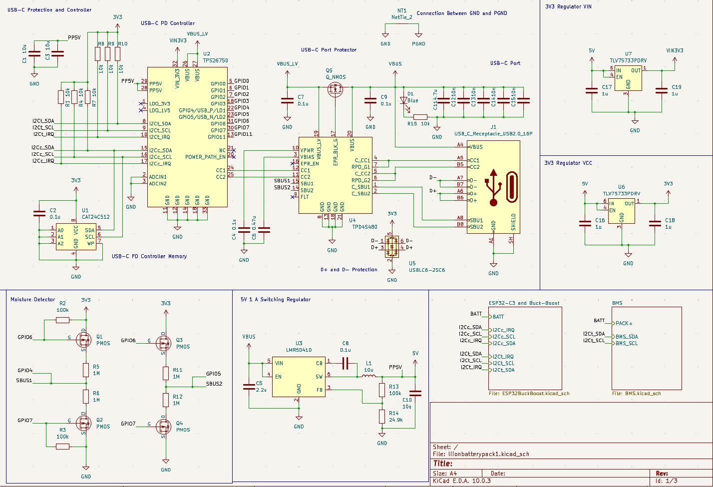
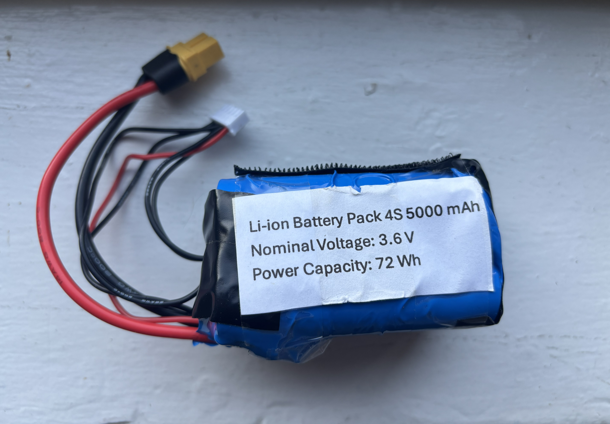
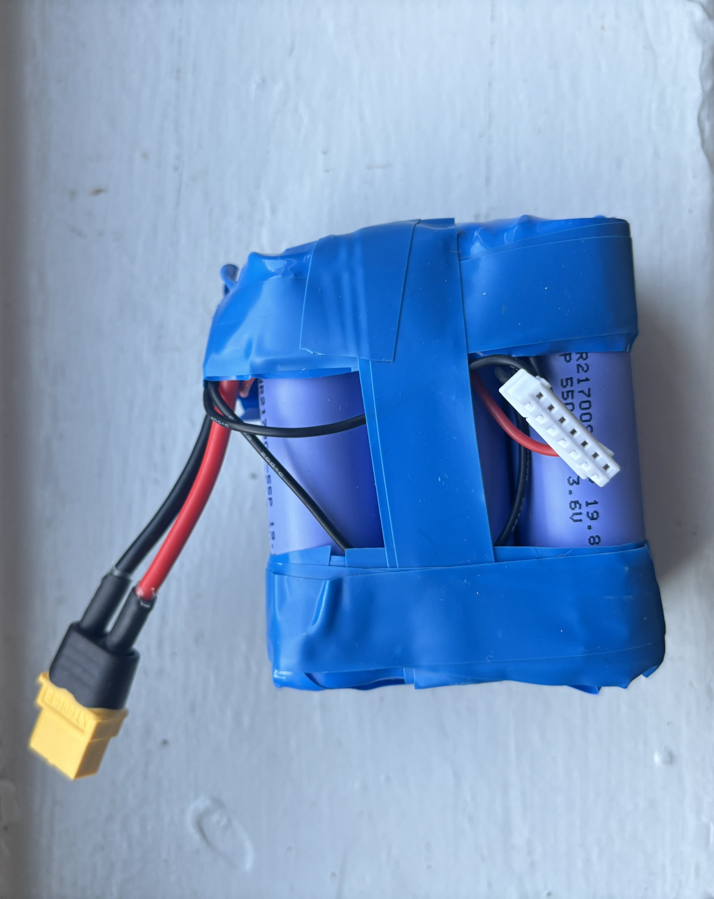

Projects
A problem I had was not having enough power capacity for my electronics and also for charging batteries. I wanted a power bank that would self-manage charging and discharging, and be able to handle 8 cells at 33.6V (max charge). I achieved this using a central BQ76942PFBR chip from Texas Instruments, and various other chips including USB-C PD with 3.1 EPR negotiation (28V output), and using a buck-boost converter in order to charge the chip. There is also logic and data Controller using an ESP32-S3 microcontroller to be able to recieve information from the various chips onboard and be able to deduce BMS status/charging percentages. The main purpose I had in mind for this PCB was to be used with an 8S1P or 8S2P pack inside a enclosure and to be used as a high-capacity power bank.
Tools & Skills: PCB Design, BMS design, USB-C PD, KiCAD, ESP32 Microcontroller

4S High-Amperage Li-Ion
This is a spot-welded battery pack which uses four Reliance RS50 21700 Li-ion batteries and a copper-nickel sandwich to build a nominal 16.8 V or 4S battery. This is done by spot welding them in series, and the copper was added to the nickel in order to increase the maximum amps the battery can handle, due to the cells being high-performance and high-amperage. There is an XT60 connector for the main power supply, and JST-XH connector for balance charging. One of the main advantages of Li-ion is that they can be much lighter for the same amount of watt-hours stored compared to Li-Po chemsitry, although typically Li-Pos have higher discharge capabilities. The Li-ion cells I used were designed to have a greater performance than typical 21700 cells, and contains more than required for small UAV aircraft power.
Tools & Skills: Spot Welding, Li-ion Batteries, Soldering

6S Li-Ion
Similar to the 4S battery, this battery is rated for a higher voltage up to 25.2 volts at full charge, and has a custom 3D-printed housing designed to enclose the battery. Heat shrink is used as insulation, and this battery also performs better in terms of capacity compared to LiPo chemistry cells.
Tools & Skills: Spot Welding, Li-ion Batteries, Soldering
